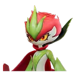

Home首页 / Database数据库 / Thornblade刺剑玫 / Prismana ThornbladePrismana 刺剑玫

No. 034C
Prismana ThornbladePrismana 刺剑玫
The six numbers belong to Thornblade and are shared by every form. The rest of what this page says about this form is read off that form's own page on the official wiki.六个数字属于 刺剑玫，所有形态共用。这一页关于本形态的其余内容，全部读自本形态在官方维基上的那一页。
Overview简介
The game's own description of this form: Their swords, covered in prismana, can never be broken, no matter how hard they are struck.游戏对这个形态自己的描述：被虹光包裹的刺剑无论遭受多大的冲击也绝不会折断，一往无前的骑士因而拥有了刺破一切阴霾的力量。
Water is this form's own — the base form is Grass alone. The description above credits Prismana with a sword that cannot be broken and says nothing about the water, so nothing here explains it. Its range is unchanged, Sea of Flowers, the base form's only area.水是这个形态自己加上去的 —— 基础形态只有草。上面的描述把「剑永不断折」归给了虹光，对那份水一个字都没提，所以这里没有东西能解释它。活动范围没有变，还是鸢尾花海，基础形态唯一的区域。
- HP生命
- 96
- ATK攻击
- 121
- P.DEF物防
- 74
- M.DEF魔防
- 73
- BREAK击破
- 53
- REGEN回能
- 92
Where to find it在哪抓
- Sea of Flowers鸢尾花海
Homeland ability家园能力
The official page carries 3 Homeland Ability icons for this form, against 2 for the base form, and names none of them in either language. The count is what the wiki prints; the names are not there to read.官方页面给这个形态画了 3 个家园能力图标，基础形态是 2 个，而两种语言都没有给出其中任何一个的名字。维基印出来的是数量，名字不在上面。
How to evolve it怎么进化
This form's own page carries no evolution tree at all — not one that ends here, none. Whether that means it cannot evolve further is something the page never says, so neither do we.这个形态自己那一页整个没有进化树 —— 不是到它就结束，是压根没画。那是否意味着它不能再进化，那一页从没说过，我们也不说。
No level, quest or material is recorded for this step. The official wiki prints its Evolution block as stage names over an empty condition list — on all 86 species, not just this one — so what this page can give you is the shape of the line and nothing about its cost.这一步没有记录任何等级、任务或材料。官方维基的进化区块在 86 个物种上都只有阶段名、条件列表是空的 —— 不是只有这一个物种如此 —— 所以这一页能给的是这条线的形状，关于代价一个字都没有。